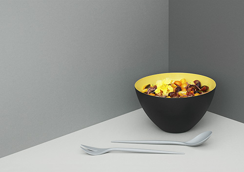

M E G A N F R I E N D
As a student in my second year of University, on a day to day basis I normally eat really

rubbish food, for example takeaways and microwave meals. I never have breakfast because
normally I'm rushing around due to getting out of bed late and lunch is the last thing on
my mind. Over the Easter holidays I decided to start eating healthier and then carry that
over to when I go back to University.
What I Eat In A Day:
Breakfast:
Porridge
Lunch:
I normally make myself a salad the night before and I always have fruit.
Tea:
I dont really stick to one type of recipe but my favourites are spaghetti bolognese
Snacks:
I try and eat as much fruit but sometimes I will fancy some chocolate which will then be
a Curly Wurly or a Freddo.